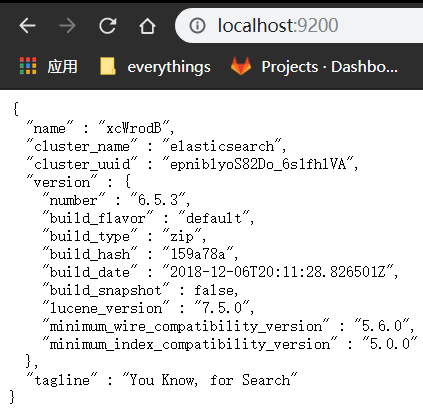
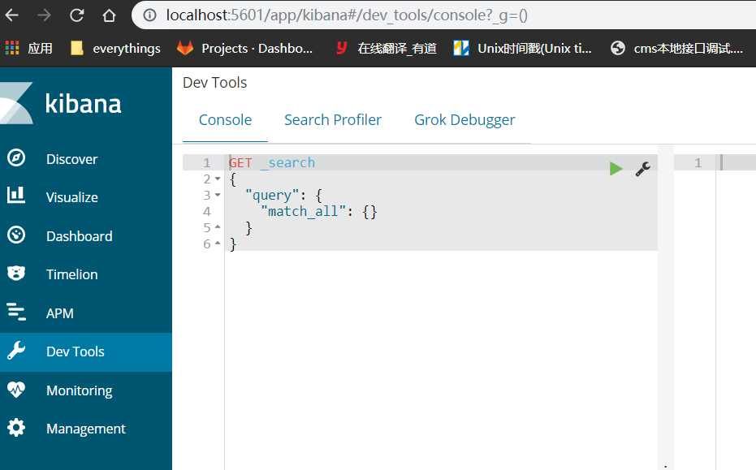

在去年十一月份左右，忽然接到新的项目需求，要对公司的客户搜索添加搜索条件。棘手的是，由于客户量很大，在数据库里都是几千万甚至上亿的数据量，所以之前的技术大佬就引入ElasticSearch搜索引擎，并且几乎所有关乎客户信息的接口都是通过es进行查询。于是，在短时间内个人进行了es快速的入门和学习，并且完成了功能的开发。现在来总结一下es的一些基础：
es简介:
Elasticsearch是一个高可扩展的开源全文搜索和分析引擎，它允许存储、搜索和分析大量的数据，并且这个过程是近实时的。它通常被用作底层引擎和技术，为复杂的搜索功能和要求提供动力。
es的基本结构:
个人将数据库的思想套到es上面: ES索引<==>数据库; ES类型<==>表; ES文档<==>数据。
另外es还有集群和节点的概念，由于时间紧，且公司业务无需进行集群和多节点的使用，所以并未深入了解这部分内容。
es安装与使用:
- 访问es官网下载es以及kibana(es可视化开发工具)
- 解压下载的es文件，进入bin目录，启动elasticsearch程序，访问
localhost:9200即可看到es相关信息:
 - 解压下载的kibana文件，进入bin目录，启动kibana程序，访问
localhost:5601即可看到kibana界面：

个人下载了最新的7.x版本，本地却跑不起来，所以又去官网下载了6.4.3版本
es索引操作：
- 查看所有索引:
GET _cat/indices?v - 添加索引:
PUT /index_name?pretty - 删除索引:
DELETE /index_name
es的简单增删改查:
- 新增
1
2
3
4PUT /index_name/type_name/document_index
{
"key":"value"
} - 删除
2.1 指定id删除2.2 根据查询条件删除1
DELETE /index_name/type_name/document_index
1
2
3
4
5
6POST /index_name/type_name/_delete_by_query
{
"query":{
查询条件
}
} - 查询
3.1 根据文档id查询3.2 根据条件查询1
GET /index_name/type_name/document_index
1
2
3
4
5
6GET /index_name/type_name/_search
{
"query":{
查询条件
}
} - 修改
4.1 替换方式更新(所有字段替换)4.2 更新方式(更新指定字段)1
2
3
4PUT /index_name/type_name/document_index
{
"key":"new_value"
}- 指定id更新
1
2
3
4
5
6POST /index_name/type_name/document_index/_update
{
"doc": {
"key":"new_value"
}
} - 使用脚本更新(script)
1
2
3
4
5
6
7POST /index_name/type_name/document_index/_update
{
"script": "ctx._source.fileName+=1", --->fileName进行+1操作(如果该字段不存在，则自动创建该字段并且赋值)
"upsert": { --->如果指定document_index文档不存在，则进行upsert的初始化
"fileName":"value"
}
} - 根据查询条件更新(updateByQuery)
1
2
3
4
5
6
7
8
9POST /index_name/type_name/_update_by_query
{
"script": {
"source": "ctx._source.field = XXX"
},
"query": {
查询条件
}
}
- 指定id更新